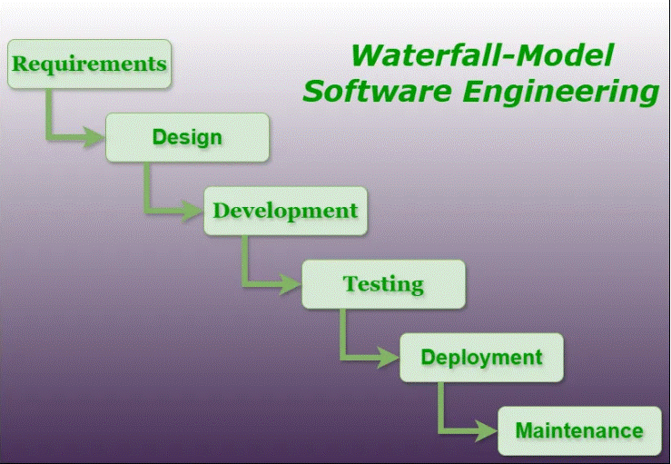

Waterfall ehk kosemudel
Waterfall on üks esimesi tarkvaraarendusemudeleid tavaliste tootmisprotsesside eeskujul, kus iga etapp eelneb järgmisele.
Tagasipöördumine eelmisesse on keeruline.
Eelnevas etapis vea avastamine, tähendab seda, et vea juurde saab tagasi pöörduda alles siis, kui tarkvara on kasutusse läinud.
-
Etapp - Nõuete määratlemine:
Selles etapis dokumenteeritakse arendatava toote/tarkvara/süsteemi nõudeid, käitumisi, sihtriistvarasi ja muud sellist, mis on arendatava tarkvara taotusliku funktsioneerimise tarbeks vajalikud.
Vahest jaotatakse see etapp ka omakorda kaheks - süsteemianalüüs ja nõuete analüüs.
-
Etapp - Süsteemi ja tarkvara kavandamine:
Teises etapis kavandatakse arendusel olevat süsteemi ja tarkvara keskendudes nende põhilistele omadustele.
Põhiomadusteks võivad olla: andmestruktuurid, tarkvaraarhitektuur, liidesed, liideste omadused ning protseduurilised ja algoritmilised detailid.
Kavandamise tulemused dokumenteeritakse mille abil hinnatakse teostuse käigus projekti kvaliteeti.
-
Etapp - Teostus ning moodulite testimine:
Eelnevalt dokumenteeritud kavandi järgi toimub kolmandas etapis tarkvara-/süsteemiarendus.
Arendustöö käigus arendatakse programmi moodulhaaval või moodulite kogumikuna.
Peale programmeerimist teostatakse moodulite ja kogumite testimised.
Olenevalt eelnevalt dokumenteeritud kavandi detailsusest tuleneb selles etapis projekti arenduslihtsus.
Mida rohkem detaile on kavandatud, seda lihtsam on arendustöö.
-
Etapp - Integratsioon ja süsteemi testimine:
Toimub kogu tarkvarasüsteemi testimine.
Peale testimist tarnitakse toote kliendile või kasutajate sihtrühmale.
Testitakse sellest vaatepunktist, kas süsteem teeb seda, mis eelnevalt dokumenteeritud ning testitakse ka seda, et süsteemis esinevad detailid on loogilised.
-
Etapp - Kasutamine ja hooldus:
Kõige pikem tarkvaraelutsüklis olev etapp.
Siin toimub vigade parandus, funktsionaalsuse muutmine (kas siis kliendi-, turu-, keskkonna- või sihtrühmasisendi/-vajadusena).
Arendustöö teostamiseks korratakse kõiki eelmisi etappe, kuid siis ainult süsteemi muutmise eesmärgil, mitte enam nullist millegi uue arendamise jaoks.
Iga etapi tulemusena tekib dokument (kas siis üks või mitu), mis kirjeldab etapis saavutatud tulemit.
Kõik dokumendid kinnitatakse.
Järgmine etapp ei tohi olla samaaegselt töös, kui eelmine pole lõpetatud.
Kuigi mingi ülekate siiski on ning infot on võimalik edastada ühest etapist teise.
